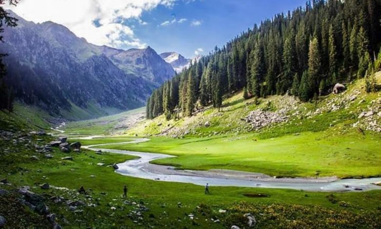

Beautiful places in Dir

Dir Valley
Places to Visit:
- Kumrat Valley
- Jahaz Banda
- Barawal Bandai
- Panjkora River
- Shahi Bagh
- Kalaam
- Dir Old Fort
- heikh Badin National Park
Local Tips:
- Try the famous Dishes In Dir valley
- Use public transportation to avoid traffic
- Explore the scenic beauty of the valley
- Experience local culture and traditions
- Trekking in the nearby mountains
- Respect local customs and traditions
- Try local cuisine
Famous Food in Dir Valley
- Chapli Kebab: A flavorful kebab made from ground meat and spices, deep-fried to perfection.

Chapli Kabab
- Landi: Traditional flatbread often served with curries and kebabs.

Landi
- Siri Pai: Hearty soup made with meat, vegetables, and aromatic spices.

Siri Pai
- Pakoras: Deep-fried fritters made from gram flour and various ingredients like potatoes or spinach.

Pakoras
- Saag: Dish made from leafy greens, cooked with spices and sometimes meat, served with roti.

saag
- Walnut Halwa: Rich dessert made from ground walnuts, sugar, ghee, and milk.

Walnut Halwa